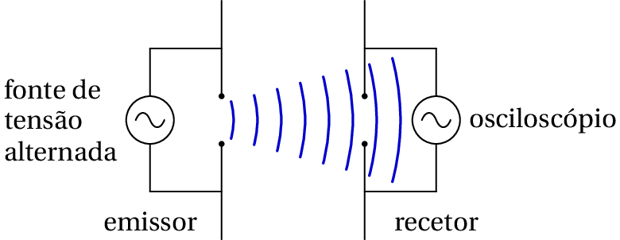
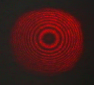

Evidência experimental das ondas eletromagnéticas
Antenas
Uma primeira antena, emissor, alimentada por uma fonte de tensão alternada, produz uma onda eletromagnética que se propaga até outra antena, recetor, dando origem a corrente alternada nessa segunda antena.
Interferência da luz
Dois feixes de luz monocromática da mesma frequência, iluminando o mesmo ecrã, criam um padraão de faixas iluminadas e oscuras, nas zonas onde a interferência for construtiva ou destrutiva.

Cada feixe é um cone e, como tal, as franjas vermelhas no ecrã são realmente círculos concêntricos, como mostra a seguinte fotografia, obtida no laboratório de física da FEUP, usando um raio laser e um interferómetro de Michelson.
